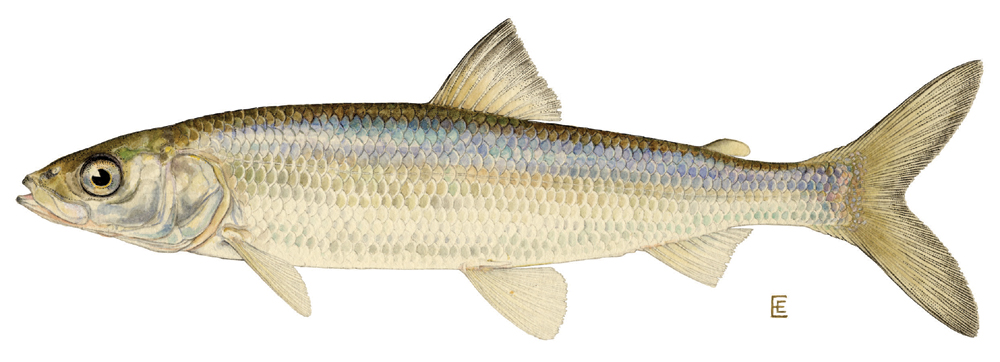

Homework 03 — Cisco Body Size in Trout Lake, Wisconsin
Descriptive statistics and a two-sample t-test on long-term fish monitoring data
Apply wrangling, descriptive statistics, and a two-sample Welch’s t-test to a real long-term fish dataset (weeks 2 lectures/worksheets 03–04).

Overview
The North Temperate Lakes Long-Term Ecological Research Program (NTL-LTER) in Wisconsin has monitored fish populations since 1981 — one of the longest continuous fish datasets in North America. Cisco (Coregonus artedi) are especially important because they depend on cold, oxygen-rich water. As lakes warm with climate change, cisco are predicted to decline. Understanding how body size varies among years is one way biologists track whether populations are changing.
In Lectures 03–04 and Worksheets 03–04 you learned to wrangle data, calculate descriptive statistics, and run a two-sample Welch’s t-test. This homework asks you to apply all those skills to a new, real dataset and answer: Did cisco body weight differ between 1981 and 1982 in Trout Lake?
Submit to Canvas: (1) your completed
.Rscript and (2) two saved PNG figures. Fill in all answer boxes in the script as#comments below the relevant code. The question numbers here match the# Q__markers in the skeleton script.
The Data
| Column | Type | What it holds |
|---|---|---|
lakeid |
chr | lake code (TR = Trout Lake) |
year4 |
num | year of catch (1981–2006) |
sampledate |
chr | sampling date (MM/DD/YYYY) |
gearid |
chr | gill-net mesh size code |
spname |
chr | species (always CISCO) |
length |
num | total body length (mm) |
weight |
num | body weight (g) |
sex |
chr | M, F, I, or NA |
Source: Ogle DH (2023). FSAdata R package / NTL-LTER, UW–Madison.
Part 1 · Load and inspect (→ see Lecture 02, Worksheet 02)
After loading the data what is the size of the dataframe
Q1 — Total rows in the raw dataset: ________
Q2 — Total columns: ________
How many fish were caught each year.
Q3 — Year with the most fish: ________ n = ________
Q4 — Year with the second most fish: ________ n = ________
Part 2 · Wrangle (→ see Lecture 03, Worksheet 03)
Complete the pipeline in the skeleton script. After filtering to 1981 and 1982 (removing any fish with missing length, missing weight, or weight = 0):
Q5 — Rows remaining after filtering: ________
Check with count(cisco_df, year):
Q6 — n for 1981: ________ Q7 — n for 1982: ________
Arrange the data by length descending and look at the five largest fish.
Q8 — Year of the heaviest fish: ________ Weight: ________ g
Part 3 · Descriptive statistics (→ see Lecture 03, Worksheet 03)
Run your group_by(year) %>% summarize(...) pipeline (see Q in the skeleton).
Fill in the table below from the cisco_stats_df output:
| 1981 | 1982 | |
|---|---|---|
| n | ||
| Mean weight (g) | ||
| SD weight (g) | ||
| SE weight (g) | ||
| Mean length (mm) |
Q9 — Is 1982 mean weight higher than 1981? Y / N
Q10 — Difference in mean weight (1982 − 1981): ________ g
Part 4 · Visualize (→ see Lecture 03, Worksheet 03)
Make and save a boxplot with jittered points and a mean ± SE plot (see skeleton).
Describe what you see in the boxplot:
Q11 — Degree of overlap between the two groups (none / some / substantial): ________________
Q12 — Approximate median weight for 1981 (from the box): ________ g
Q13 — Approximate median weight for 1982 (from the box): ________ g
Q14 — Do the SE error bars overlap? Y / N: ________ What does this suggest? ________________
Part 5 · Five-step Welch’s t-test (→ see Lecture 04, Worksheet 04)
Work through each step in order.
Step 1 — Hypotheses
Write your hypotheses before looking at the test result.
Q15 — H₀ (plain English):
Q16 — Hₐ (plain English):
Significance level: α = ________ Test type (one- or two-tailed): ________
Step 2 — Normality: histogram
Make the histogram of body weight, faceted by year (see skeleton).
Q17 — Shape of 1981 distribution (bell-shaped / right-skewed / other): ________________
Q18 — Shape of 1982 distribution: ________________
Step 3 — Normality: QQ plot + Shapiro-Wilk
Run shapiro.test() on each year’s weights separately (see skeleton).
Q19 — Shapiro-Wilk 1981: W = ________ p = ________
Q20 — Shapiro-Wilk 1982: W = ________ p = ________
Both groups may fail Shapiro-Wilk (p < 0.05). With n > 80 the t-test is robust to non-normality because of the Central Limit Theorem — the sampling distribution of the mean is approximately normal even when raw data are not. Check the QQ plot: if points roughly follow the line without extreme curvature, proceed. (See Lecture 04, Step 3)
Q21 — Decision: proceed with the t-test? Y / N Reason:
Step 4 — Variance: Levene’s test
Run leveneTest(weight ~ year, data = cisco_df) (see skeleton).
Q22 — Levene’s F: ________ p: ________
Q23 — Are the variances equal? Y / N
Q24 — Does this change which t-test we run? Y / N Why:
Step 5 — Run the test and interpret
Run t.test(y ~ x, data = df, var.equal = FALSE, alternative = "two.sided").
Q25 — t-statistic: ________
Q26 — df (Welch-Satterthwaite — probably not a whole number): ________
Q27 — p-value (write the full number, not just “< 0.05”): ________
Q28 — 95% CI for the difference in means: ________ to ________ g
Q29 — Mean weight 1981: ________ g Mean weight 1982: ________ g
Q30 — Is p < α? Y / N Decision (reject / fail to reject H₀): ________________
Part 6 · Results sentence (→ see Lecture 04)
Complete the sentence below by filling in every blank:
Q31: “Cisco body weight was significantly [higher / lower] in ______ than in ______ (Welch’s t-test: t(______) = ______, p ______). Mean ± SE body weight was ______ ± ______ g in 1981 and ______ ± ______ g in 1982, a difference of ______ g.”
Then write 1–2 sentences suggesting a biological explanation for why body size differed between these two consecutive years:
Q32 — Biological explanation:
Submission checklist
Before uploading to Canvas, confirm:
Going further (optional — no points)
Run the code below in your script to visualize the full 25-year time series of mean Cisco body weight. Does body size show a trend over the monitoring period?
cisco_raw_df %>%
filter(!is.na(weight), weight > 0) %>%
group_by(year4) %>%
summarize(n = n(), mean_wt = mean(weight, na.rm = TRUE),
se_wt = sd(weight, na.rm = TRUE) / sqrt(n)) %>%
ggplot(aes(x = year4, y = mean_wt)) +
geom_point(aes(size = n), color = "steelblue", alpha = 0.8) +
geom_line(color = "steelblue", linewidth = 0.6) +
geom_errorbar(aes(ymin = mean_wt - se_wt, ymax = mean_wt + se_wt),
width = 0.3, alpha = 0.5) +
geom_smooth(method = "lm", se = FALSE, linetype = "dashed", color = "tomato") +
labs(title = "25-Year Cisco Body Weight Trend — Trout Lake, WI",
subtitle = "Annual mean ± SE; point size = sample size",
x = "Year", y = "Mean Body Weight (g)",
caption = "Dashed line = linear trend. NTL-LTER / FSAdata") +
theme_minimal()Notice: the long-term trend in mean body weight is less dramatic than the year-to-year variation you found in your t-test. This is why both single-year comparisons and long-term trends matter in ecology.
Data: Ogle DH (2023). FSAdata / NTL-LTER, University of Wisconsin–Madison, 1981–2006.